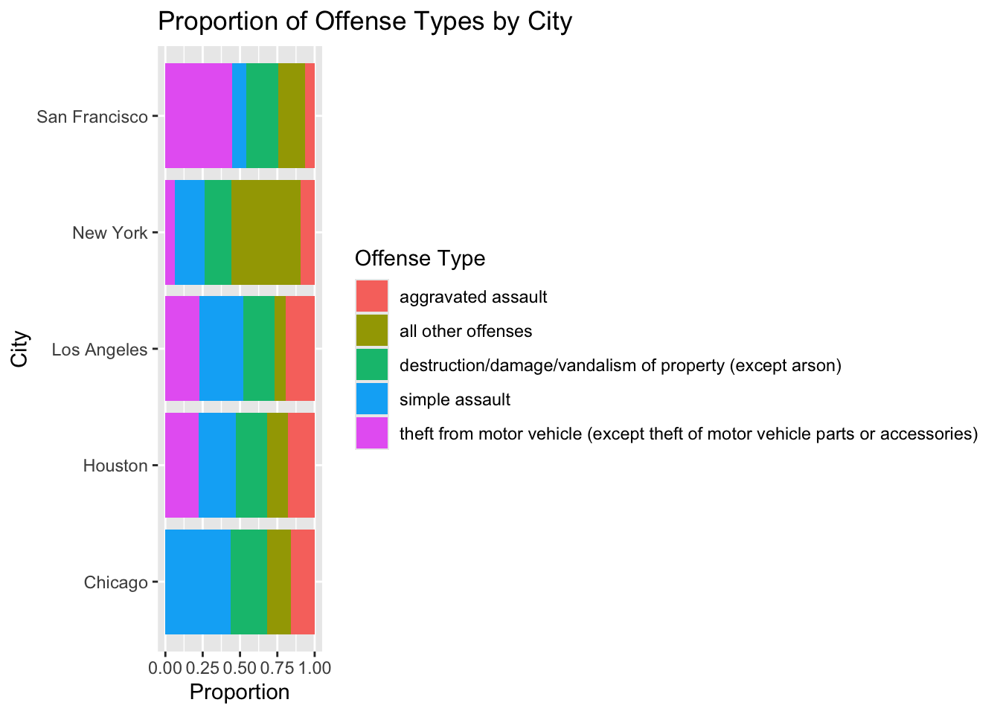
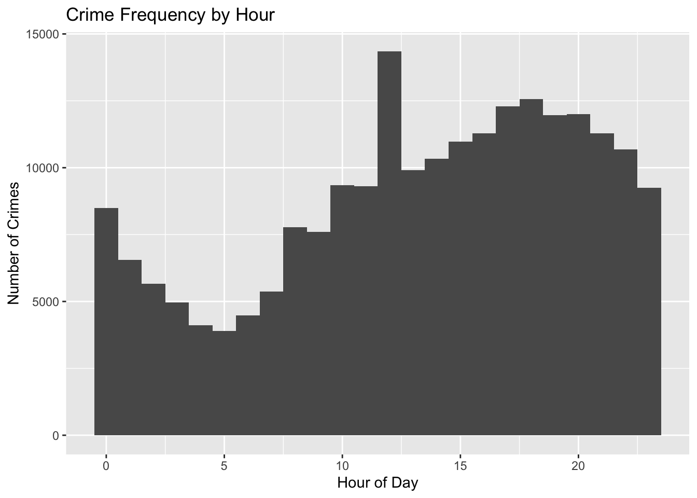
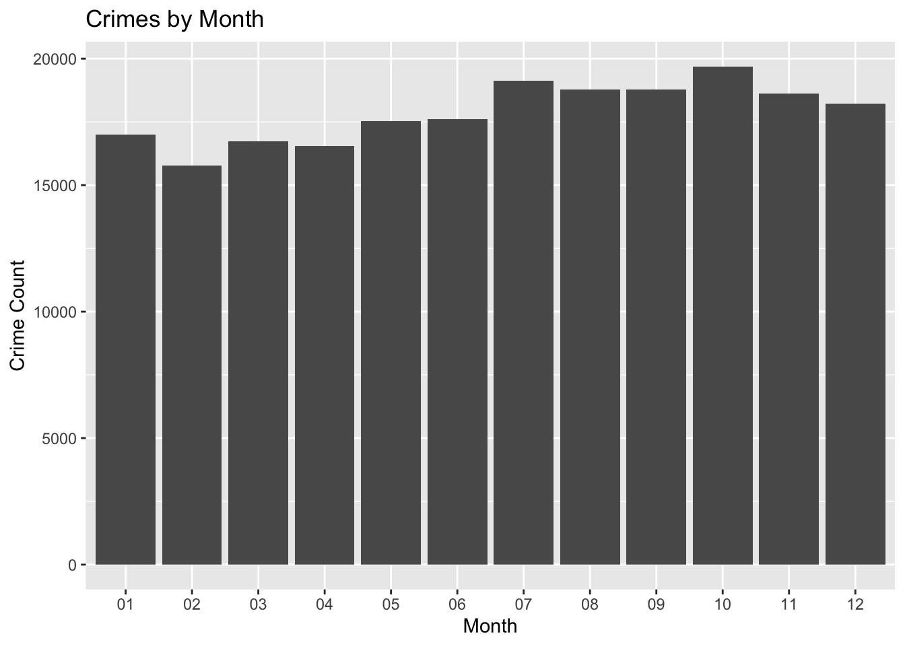
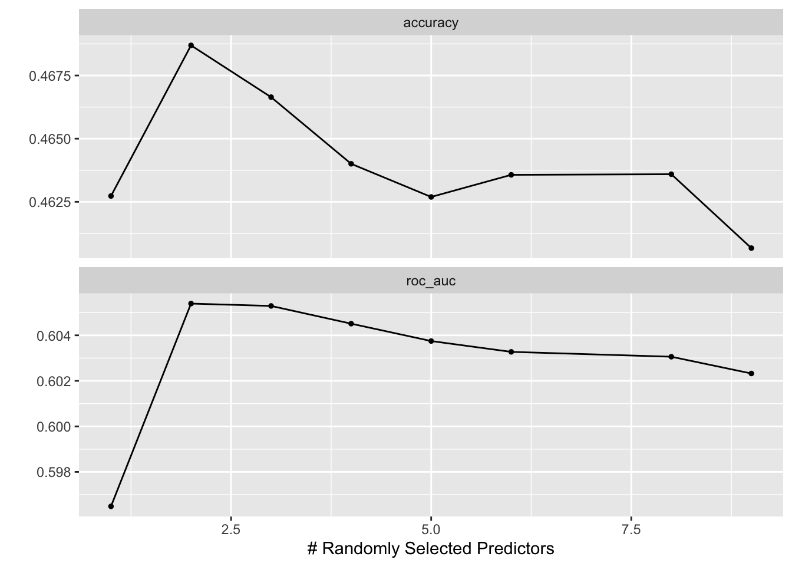
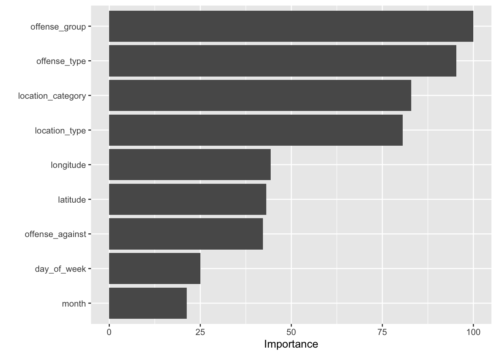

Criminal Case Los Angeles 2021
Summary
The main objective of this project was to investigate whether crime characteristics and spatial information could be used to predict the time of day (Morning, Afternoon, or Night) in which crimes occurred within Los Angeles during 2021. Using the crime_open dataset, this project explored how variables such as offense categories, geographic location, and location-related crime features influenced crime timing patterns through a random forest classification model.
One of the main insights from this project was that crime-related categorical variables and spatial information contributed the most to predicting crime timing patterns. Variables such as offence_group, offence_type, and location_category were among the most influential predictors in the final random forest model. The model also performed better at identifying crimes that occurred during the Night period compared to Morning and Afternoon, suggesting that nighttime crimes had more distinguishable patterns in the available predictors.
The variable importance plot shows that offense-related and location-related variables contributed the most to the random forest model. In particular, offence_group, offence_type, and location_category had the highest importance values, suggesting that the type of crime and its location context were strongly associated with the time period in which crimes occurred. Variables such as month and day_of_week had lower importance, indicating that they contributed less to the model’s predictive performance.
Motivation and Context
Crime patterns can vary depending on location, offense type, and time. This project focuses on Los Angeles crime records from 2021 to better understand whether information about a crime incident can help predict the general time of day in which it occurred. Instead of predicting the exact hour, this project groups crime occurrences into broader categories: Morning, Afternoon, and Night.
This question is useful because it connects statistical learning with a real-world public safety dataset. By using a random forest model, the project investigates whether patterns in offense categories, spatial coordinates, and location characteristics provide meaningful information about crime timing. The goal is not to claim that crime timing can be perfectly predicted, but to explore which variables are most informative and where the model struggles.
Packages Used In This Analysis
library(tidymodels)
library(tidyverse)
library(tidyclust)
library(ggplot2)
library(readxl)
library(vip)Data Description
The data for this project was obtained from the Crime Open Database (CODE) project: https://osf.io/zyaqn/overview. The dataset compiles crime data from multiple large cities in the United States. The original data were gathered by local city agencies, such as police departments, and later made publicly available.
An observation in this dataset represents one reported criminal case. The full dataset contains 1,887,138 observations and 14 variables, including information about the city, offense classification, date and time, geographic coordinates, and location type.
options(scipen = 999)
crime_core <- readr::read_csv(here::here("crime_open_database_core_2021.csv"))size_sum(crime_core)[1] "[1,887,138 × 14]"sum(is.na(crime_core))[1] 3674672Data Wrangling and Exploratory Data Analysis
Because the dataset includes multiple cities and is relatively large, the initial analysis begins by comparing the five cities with the highest number of reported crimes and the five most common offense types. This helps provide an overview of how crime type distributions vary across cities.
offenses_top5 <- crime_core |>
count(offense_type, sort = TRUE) |>
slice(1:5)
cities_top5 <- crime_core |>
count(city_name, sort = TRUE) |>
slice(1:5)
filtered <- crime_core |>
filter(
offense_type %in% offenses_top5$offense_type,
city_name %in% cities_top5$city_name
)
ggplot(filtered, aes(x = city_name, fill = offense_type)) +
geom_bar(position = "fill") +
coord_flip() +
labs(
title = "Proportion of Offense Types by City",
x = "City",
y = "Proportion",
fill = "Offense Type"
)
The proportions of offense types differ across cities. While the same offense categories appear in multiple cities, some cities have higher shares of certain crimes. This suggests that crime patterns vary by location, which supports focusing the modeling task on one city to reduce differences in reporting practices and local context.
Focusing on Los Angeles
los_angeles <- crime_core |>
filter(city_name == "Los Angeles")size_sum(los_angeles)[1] "[214,445 × 12]"Focusing on Los Angeles reduces the size of the dataset and makes the analysis more consistent. Crime patterns, reporting methods, and data completeness may differ across cities, so analyzing one city helps limit those differences.
glimpse(los_angeles)Rows: 214,445
Columns: 12
$ city_name <chr> "Los Angeles", "Los Angeles", "Los Angeles", "Los An…
$ offense_type <chr> "theft from motor vehicle (except theft of motor veh…
$ offense_group <chr> "larceny/theft offenses", "fraud offenses (except co…
$ offense_against <chr> "property", "property", "society", "society", "prope…
$ longitude <dbl> -118.2418, -118.5033, -118.4146, -118.4146, -118.285…
$ latitude <dbl> 34.0955, 34.1598, 34.3038, 34.3038, 33.7509, 34.2857…
$ location_type <chr> "vehicle parking", "other commercial", "street", "st…
$ location_category <chr> "open space", "commercial", "street", "street", "oth…
$ year <chr> "2021", "2021", "2021", "2021", "2021", "2021", "202…
$ month <chr> "01", "01", "01", "01", "01", "01", "01", "01", "01"…
$ day_of_week <chr> "Friday", "Friday", "Friday", "Friday", "Friday", "F…
$ hour <dbl> 0, 0, 0, 0, 0, 0, 0, 0, 0, 0, 0, 0, 0, 0, 0, 0, 0, 0…colMeans(is.na(los_angeles)) * 100 city_name offense_type offense_group offense_against
0 0 0 0
longitude latitude location_type location_category
0 0 0 0
year month day_of_week hour
0 0 0 0 The variables data_start and data_end contain substantial missing data for Los Angeles. These variables represent a possible time range for when a crime could have occurred, but for Los Angeles, the dataset relies on date_single, which provides a representative estimate of the crime occurrence time.
los_angeles <- los_angeles |>
mutate(
location_type = ifelse(is.na(location_type), "Unknown", location_type),
location_category = ifelse(is.na(location_category), "Unknown", location_category)
)Missing values in location_category and location_type were replaced with Unknown because these variables describe categorical location information. Replacing missing values with the most common category could incorrectly label crimes as occurring in a location type that was not actually recorded.
los_angeles <- los_angeles |>
mutate(
year = format(date_single, "%Y"),
month = format(date_single, "%m"),
day_of_week = weekdays(date_single),
hour = as.numeric(format(date_single, "%H"))
)The date_single variable was separated into year, month, day_of_week and hour. These features are more useful for modeling because they allow the model to learn temporal patterns instead of using the raw datetime value.
los_angeles <- los_angeles |>
select(-date_start, -date_end, -uid, -offense_code, -date_single, -census_block)The variables data_start and data_end were removed due to substantial missingness. The variable uid was removed because it is only a unique identifier and does not provide predictive value. The variable offence_code was removed because offence_group and offence_type provide more descriptive offense information. The raw date_single variable was removed after extracting useful time-based features. Finally, census_block was excluded because it is a high-cardinality geographic identifier that could increase model complexity and overfitting, while spatial information is already represented by longitude and latitude.
ggplot(los_angeles, aes(x = hour)) +
geom_histogram(binwidth = 1) +
labs(
title = "Crime Frequency by Hour",
x = "Hour of Day",
y = "Number of Crimes"
)
Crime occurrences are not evenly distributed throughout the day. Higher crime frequencies appear during afternoon and evening hours, suggesting that time contains meaningful structure. However, because the target variable time_of_day is created from hour, the hour variable must later be removed from the predictors to avoid target leakage.
ggplot(los_angeles, aes(x = month)) +
geom_bar() +
labs(
title = "Crimes by Month",
x = "Month",
y = "Crime Count"
)
The monthly distribution suggests that crime occurrences vary across the year rather than remaining completely constant. However, month later showed relatively low variable importance in the final random forest model.
los_angeles |>
count(offense_type, sort = TRUE)# A tibble: 47 × 2
offense_type n
<chr> <int>
1 simple assault 29886
2 motor vehicle theft 24362
3 theft from motor vehicle (except theft of motor vehicle parts or acces… 22648
4 all other larceny 21641
5 destruction/damage/vandalism of property (except arson) 20942
6 aggravated assault 19659
7 impersonation 11228
8 residential burglary/breaking & entering 7796
9 all other offenses 7246
10 intimidation 6999
# ℹ 37 more rowslos_angeles |>
count(offense_group, sort = TRUE)# A tibble: 27 × 2
offense_group n
<chr> <int>
1 assault offenses 56544
2 larceny/theft offenses 48186
3 motor vehicle theft 24362
4 destruction/damage/vandalism of property (except arson) 20942
5 burglary/breaking & entering 14634
6 fraud offenses (except counterfeiting/forgery and bad checks) 13261
7 robbery 9780
8 all other offenses 7246
9 weapon law violations 6743
10 sex offenses 3648
# ℹ 17 more rowsThe dataset contains 47 distinct offense types and 27 offense groups. Since offence_type has many categories, rare levels are grouped during preprocessing to reduce sparsity and improve model stability.
Modeling
The modeling objective is to predict whether a crime occurred during the Morning, Afternoon, or Night using offense-related, location-related, and spatial predictors.
Train/Test Split
First, a reproducible random sample of 100,000 crime observations is created from the Los Angeles dataset. Then, a new categorical variable called time_of_day is generated by grouping crime hours into Morning, Afternoon, and Night. Finally, the dataset is split into 80% training data and 20% testing data using a stratified split based on time_of_day, ensuring that the proportion of each category is preserved in both datasets.
set.seed(200)
los_angeles_sample <- los_angeles |>
slice_sample(n = 1000)
los_angeles_sample <- los_angeles_sample |>
mutate(
time_of_day = case_when(
hour >= 5 & hour <= 11 ~ "Morning",
hour >= 12 & hour <= 18 ~ "Afternoon",
hour >= 19 | hour <= 4 ~ "Night"
),
time_of_day = as.factor(time_of_day)
)
set.seed(123)
crime_split <- initial_split(los_angeles_sample, prop = 0.8, strata = time_of_day)
crime_train <- training(crime_split)
crime_test <- testing(crime_split)Preprocessing Recipe
This recipe prepares the training data for the random forest model by reducing categorical complexity and improving model stability. The step_other() function groups rare categorical levels that appear in less than 1% of the data into a single category labeled rare, which helps reduce sparsity and potential overfitting. The variables city_name and year are removed because the analysis focuses only on Los Angeles crimes in 2021. The variable hour is removed because time_of_day was directly created from it; keeping hour would introduce target leakage.
crime_recipe <- recipe(time_of_day ~ ., data = crime_train) |>
step_rm(city_name, year, hour) |>
step_other(all_nominal_predictors(), threshold = 0.01, other = "rare")Random Forest Model
A random forest is an ensemble learning method that builds many decision trees and combines their predictions. Each tree is trained on a bootstrap sample of the data, and at each split only a random subset of predictors is considered. This randomness helps reduce overfitting and improves generalization compared to a single decision tree.
rf_model <- rand_forest(
trees = 100,
mtry = tune()
) |>
set_engine("ranger", importance = "permutation") |>
set_mode("classification")
rf_workflow <- workflow() |>
add_model(rf_model) |>
add_recipe(crime_recipe)The model is configured to build 100 decision trees. The mtry parameter is tuned to determine the optimal number of predictors considered at each split. Permutation variable importance is also enabled to evaluate which predictors contribute most to the model.
Cross-Validation and Tuning
set.seed(123)
crime_folds <- vfold_cv(crime_train, v = 5)
rf_tuned <- tune_grid(
rf_workflow,
resamples = crime_folds,
grid = 10,
metrics = metric_set(accuracy, roc_auc)
)Five-fold cross-validation is used to tune the random forest model. A grid of 10 different mtry values is evaluated, and model performance is assessed using accuracy and ROC AUC.
autoplot(rf_tuned)
The tuning results indicate that the random forest model performed best when only a small subset of predictors was considered at each split. The best configuration occurred at the mtry value selected by ROC AUC, suggesting that increased randomness helped the model generalize better.
best_rf# A tibble: 1 × 2
mtry .config
<int> <chr>
1 1 pre0_mod1_post0Final Model
best_rf <- select_best(rf_tuned, metric = "roc_auc")
rf_final <- finalize_workflow(rf_workflow, parameters = best_rf)
rf_fit <- fit(rf_final, data = crime_train)The final random forest model is created by selecting the best-performing mtry value based on ROC AUC. The workflow is then finalized using this selected parameter and fitted on the full training dataset.
Variable Importance and OOB Error
rf_engine |> pluck("prediction.error")[1] 0.4276248The Out-of-Bag (OOB) prediction error provides an internal estimate of model generalization performance. An OOB error around 0.403 means that the model incorrectly classified about 40% of the out-of-bag observations, corresponding to an estimated OOB accuracy of about 60%.
vip(rf_engine, scale = TRUE)
The variable importance plot shows that offence_group, offence_type, and location_category were the most influential predictors in classifying time_of_day. Variables such as longitude, latitude, and location_type also contributed meaningful information. In contrast, month and day_of_week had relatively low importance, suggesting that they provided less predictive value compared to offense and location variables.
Test Set Predictions and Confusion Matrix
rf_preds <- predict(rf_fit, crime_test, type = "prob") |>
bind_cols(predict(rf_fit, crime_test)) |>
bind_cols(crime_test)
conf_mat(rf_preds,
truth = time_of_day,
estimate = .pred_class)conf_mat(rf_preds,
truth = time_of_day,
estimate = .pred_class) Truth
Prediction Afternoon Morning Night
Afternoon 32 19 30
Morning 4 5 3
Night 38 23 47The confusion matrix shows that the random forest model was generally better at identifying crimes that occurred during the Night period compared to Morning and Afternoon. Many nighttime observations were correctly classified, suggesting that the predictors contained stronger patterns associated with crimes occurring at night. In contrast, the model had greater difficulty distinguishing between morning and afternoon crimes, indicating that these categories may share more similar characteristics.
Insights/Conclusion
The random forest model showed that crime characteristics and spatial information contain some useful signal for predicting the time of day in which crimes occurred. The most important predictors were offense-related and location-related variables, especially offence_group, offence_type, and location_category. This suggests that the type of crime and its location context are related to crime timing patterns in Los Angeles.
The model performed best when predicting nighttime crimes. This may indicate that nighttime crimes have more distinguishable patterns in the available predictors. However, the model had more difficulty separating morning and afternoon crimes, suggesting that these categories may overlap more strongly in terms of offense characteristics and location patterns.
Data Limitations and Future Work
One limitation of this dataset is that crime data depends heavily on police reporting and recording practices. Certain crimes may be underreported, misclassified, or recorded differently depending on the location or reporting agency. This means the dataset may not fully represent all crimes that occurred in Los Angeles during 2021.
Another limitation is that some variables may not perfectly capture the real-world characteristics they are meant to describe. For example, the time_of_day target variable was created by grouping exact hours into broader categories. While this makes the classification task more manageable, it also simplifies crime timing patterns and may hide more detailed differences across hours.
Finally, the model was trained only on Los Angeles crime data from 2021, which limits its generalizability. Crime patterns can change over time due to social, economic, seasonal, or environmental factors, and different cities may have different crime distributions and reporting practices. Future work could compare multiple years, include additional socioeconomic variables, or test other machine learning models to improve predictive performance.